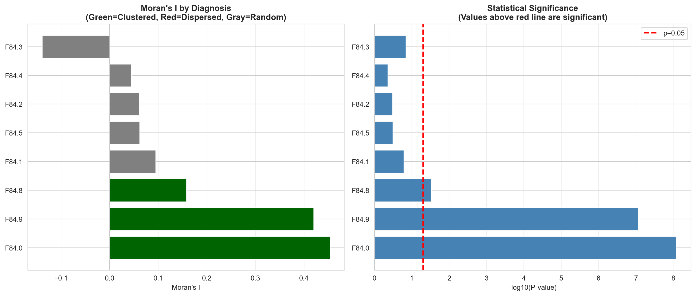

summary_pivot = asr_by_icd.pivot_table( index=['icd_code', 'description'], columns='year', values='asr_total', aggfunc='first').reset_index()summary_pivot.columns.name =Nonesummary_pivot.to_csv(os.path.join(output_path, 'asr_summary_pivot_f84.csv'), index=False)year_cols = [c for c in summary_pivot.columns ifisinstance(c, int) or (isinstance(c, str) and c.isdigit())]format_dict = {col: '{:.2f}'for col in year_cols}summary_pivot.style.format(format_dict, na_rep='-').hide(axis="index")
icd_code
description
2019
2020
2021
2022
2023
2024
F84.0
Childhood autism
9.50
7.29
12.41
20.88
36.38
49.27
F84.1
Atypical autism
0.62
0.39
0.48
0.68
1.37
2.07
F84.2
Rett syndrome
0.37
0.18
0.24
0.39
0.39
0.63
F84.3
Other childhood disintegrative disorder
0.04
0.03
0.03
0.03
0.04
0.02
F84.4
Overactive disorder with mental retardation and stereotyped movements
total_hosp = hospitalizations['hospitalizations'].sum()unique_codes = hospitalizations['icd_code'].nunique()years_covered = hospitalizations['year'].nunique()summary_stats = pd.DataFrame({'Metric': ['Total Hospitalizations','Years Covered','ICD Codes Analyzed','Mean Hospitalizations/Year','F84 subcodes present' ],'Value': [f"{total_hosp:,.0f}",f"{years_covered} ({hospitalizations['year'].min()}-{hospitalizations['year'].max()})", unique_codes,f"{total_hosp/years_covered:,.0f}",len([c for c in hospitalizations['icd_code'].unique() if c.startswith('F84')]) ]})summary_stats.style.hide(axis="index")
Metric
Value
Total Hospitalizations
25,857
Years Covered
6 (2019-2024)
ICD Codes Analyzed
8
Mean Hospitalizations/Year
4,310
F84 subcodes present
8
Table 5: Summary statistics of ASD hospitalizations
1.2 Regional Analysis
1.2.1 Age-Standardized Rates by Region
Code
regional_asr_pivot = regional_asr.pivot_table( index='region', columns='year', values='asr', aggfunc='first').reset_index()regional_asr_pivot['Mean ASR'] = regional_asr_pivot[[c for c in regional_asr_pivot.columns if c !='region']].mean(axis=1).round(2)regional_asr_pivot = regional_asr_pivot.sort_values('Mean ASR', ascending=False)year_cols = [c for c in regional_asr_pivot.columns ifisinstance(c, (int, float)) and c !='Mean ASR']format_dict = {col: '{:.2f}'for col in year_cols + ['Mean ASR']}regional_asr_pivot.style.format(format_dict, na_rep='-').background_gradient( cmap='YlOrRd', subset=['Mean ASR']).hide(axis="index")
region
2019
2020
2021
2022
2023
2024
Mean ASR
Ñuble
65.31
35.81
80.12
118.81
168.81
204.08
112.16
Arica y Parinacota
39.73
32.61
64.68
95.48
157.35
172.46
93.72
Magallanes
92.76
58.35
73.75
85.88
120.20
126.56
92.92
Antofagasta
40.20
32.75
52.08
74.13
145.95
171.31
86.07
Coquimbo
33.59
24.63
42.27
71.10
110.18
165.42
74.53
Aysén
34.95
23.00
38.20
72.99
100.17
165.58
72.48
Tarapacá
42.06
19.13
24.98
56.35
76.07
131.04
58.27
Valparaíso
32.75
22.54
23.91
47.06
87.20
127.86
56.89
Maule
21.00
16.83
20.54
46.07
74.98
116.80
49.37
Biobío
36.20
21.89
24.42
40.59
64.14
95.87
47.18
Los Ríos
41.59
36.72
25.93
43.20
60.01
72.29
46.62
Metropolitana
24.41
16.31
26.50
43.36
70.77
92.68
45.67
Atacama
26.89
14.66
20.11
41.13
77.32
83.15
43.88
Los Lagos
12.53
9.32
15.07
20.03
29.38
45.66
22.00
Table 6: Age-standardized hospitalization rates by region (per 100,000)
Code
fig, axes = plt.subplots(1, 2, figsize=(16, 8))all_regions = mean_asr_region['region'].tolist()ax1 = axes[0]for region in all_regions: df_reg = regional_asr[regional_asr['region'] == region] ax1.plot(df_reg['year'], df_reg['asr'], marker='o', linewidth=2, markersize=5, label=region)ax1.set_xlabel('Year')ax1.set_ylabel('ASR (per 100,000)')ax1.set_title('ASR Trend - All Regions', fontweight='bold')ax1.legend(bbox_to_anchor=(1.02, 1), loc='upper left', fontsize=8)ax1.grid(True, alpha=0.3)ax1.set_xticks(YEARS)ax2 = axes[1]data_sorted = mean_asr_region.sort_values('mean_asr', ascending=True)colors = plt.cm.YlOrRd(data_sorted['mean_asr'] / data_sorted['mean_asr'].max())ax2.barh(data_sorted['region'], data_sorted['mean_asr'], color=colors)ax2.set_xlabel('Mean ASR (per 100,000)')ax2.set_title('Mean ASR by Region (2019-2024)', fontweight='bold')ax2.grid(True, alpha=0.3, axis='x')plt.tight_layout()save_figure(fig, 'regional_asr_trends_f84.png')plt.show()
Figure 6: Age-standardized rates trend by region (2019-2024)
Table 16: Spatial Autocorrelation (Moran’s I) - All F84 Diagnoses
Code
if has_spatial_data andlen(disease_moran) >0: fig, axes = plt.subplots(1, 2, figsize=(14, 6)) ax1 = axes[0] moran_vals = [(icd, disease_moran[icd].I, disease_moran[icd].p_norm) for icd in disease_moran] moran_vals.sort(key=lambda x: x[1], reverse=True) codes = [x[0] for x in moran_vals] i_vals = [x[1] for x in moran_vals] p_vals = [x[2] for x in moran_vals] colors = ['darkgreen'if p <0.05and i >0else ('darkred'if p <0.05and i <0else'gray') for i, p inzip(i_vals, p_vals)] ax1.barh(codes, i_vals, color=colors) ax1.axvline(x=0, color='black', linestyle='-', linewidth=0.5) ax1.set_xlabel("Moran's I") ax1.set_title("Moran's I by Diagnosis\n(Green=Clustered, Red=Dispersed, Gray=Random)", fontweight='bold') ax1.grid(True, alpha=0.3, axis='x') ax2 = axes[1] ax2.barh(codes, [-np.log10(p) if p >0else0for p in p_vals], color='steelblue') ax2.axvline(x=-np.log10(0.05), color='red', linestyle='--', linewidth=2, label='p=0.05') ax2.set_xlabel('-log10(P-value)') ax2.set_title('Statistical Significance\n(Values above red line are significant)', fontweight='bold') ax2.legend() ax2.grid(True, alpha=0.3, axis='x') plt.tight_layout() save_figure(fig, 'moran_comparison_diseases_f84.png') plt.show()else: fig, ax = plt.subplots(figsize=(8, 6)) ax.text(0.5, 0.5, 'Insufficient data for Moran comparison', ha='center', va='center', fontsize=14) ax.set_axis_off() plt.show()

Figure 15: Moran’s I Comparison Across F84 Diagnoses
![]()